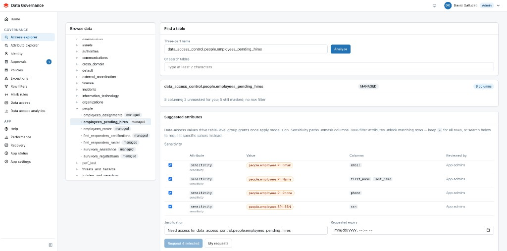

A Databricks App that governs who can see what in Unity Catalog. For every table it answers three questions: who may query it, which sensitive columns they may see unmasked, and which rows they may see. Approvers grant those rights as expiring attributes, and the app turns approved attributes into UC groups, grants, masks, and row filters.

| Access explorer | Pick a table and see which columns are masked, which row filter applies, and which attributes unlock the rest. |
| Identity and attributes | Attributes are data_access (table access), sensitivity (column unmasking), and row-filter dimensions. Assign, revoke, and set expiry. |
| Approvals and requests | Users request attributes; category approvers or admins decide. My requests and My access show status. |
| Policies and exceptions | Read-only view of metastore and catalog ABAC policies, plus exception management. |
| Mask rules and row filters | Admins define mask and row-filter rules; the app regenerates the Unity Catalog functions and policies. |
| Data access sync | Turns reviewed table tags into account groups, memberships, and GRANT/REVOKE statements. Runs on a schedule and on demand, with dry run first. |
| Data access analytics | Admin dashboard: Data usage (reads and sensitive-column access from UC lineage), Access reports (who holds access vs who uses it, unused access, reads without a grant, CSV exports), Sync health (run history). |
| Recovery and settings | Git export and import of app configuration, cache and storage settings, and performance views. |
Admins see the full navigation. Everyone else sees Home, Access explorer, Identity, and Help.
| Platform | Databricks Apps (sign-in through the Apps proxy), Unity Catalog, Lakeflow Jobs |
| Backend | Python 3.11+, FastAPI, Pydantic v2, Uvicorn, Databricks SDK, psycopg (Lakebase), cachetools |
| Storage | Lakebase Postgres (default) or Delta tables, chosen per deployment |
| Usage analytics | Daily Lakeflow Job (06:00 UTC) reading system.access lineage into {catalog}.usage summary tables |
| Frontend | React 19, TypeScript, Vite 8, TanStack Query, React Router 7, Recharts, Mermaid |
| Testing | pytest (backend, coverage gate 90%), Vitest and Testing Library (frontend), Ruff |
| Delivery | Declarative Automation Bundle (databricks.yml) and scripts/deploy.sh: builds the UI, deploys the app and jobs, runs an idempotent setup job |
One bundle creates the app, the Lakebase project and database, the setup job, the grants sync
job, and the usage rollup job. The setup job creates the app catalog, the Delta tables, and the
masking UDFs. A separate Account Admin service principal handles metastore ABAC
and the usage rollup. Its credentials live in a Databricks secret scope. Admin access is granted
through the admin_group variable (default admins).